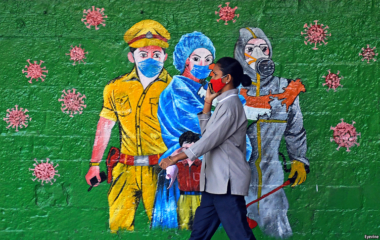

2021-01-15T19:45:02+00:00
After the pandemic
疫情过后
疫情過後
The big picture
大图景
大圖景
Four authors consider how covid-19 will change the world
四位作家探讨新冠疫情将如何改变世界
四位作家探討新冠疫情將如何改變世界

IN “THE SEVENTH SEAL”, a film by Ingmar Bergman, a knight returns from the crusades to find his homeland ravaged by the plague. Suffering and devastation have shaken his faith in God. When Death comes for him, the crusader proposes a game of chess in order to eke out enough time to commit one act—any act—that might bring meaning amid the pestilence.
在英格玛·伯格曼（Ingmar Bergman）的电影作品《第七封印》（The Seventh Seal）中，一位骑士参加十字军东征归来，发现故土瘟疫肆虐。苦难和毁灭动摇了他对上帝的信心。当死神前来时，骑士提议与死神下一盘棋，以尽量拖延时间去完成一件事——任何一件可能在瘟疫中产生意义的事。
在英格瑪·伯格曼（Ingmar Bergman）的電影作品《第七封印》（The Seventh Seal）中，一位騎士參加十字軍東征歸來，發現故土瘟疫肆虐。苦難和毀滅動搖了他對上帝的信心。當死神前來時，騎士提議與死神下一盤棋，以盡量拖延時間去完成一件事——任何一件可能在瘟疫中產生意義的事。
In the teeth of a scourge on the scale of covid-19, the impulse to draw significance from suffering is again strong. However, as is clear from the first of what will surely be shelf-loads of books about the coronavirus, in a secular age a pandemic is principally seen not as a question of inscrutable divine will, but as a test of earthly powers.
面对新冠疫情这种规模的灾难，人们从苦难中追寻意义的冲动再次被激发。关于新冠病毒的书必将充箱盈架，不过从其中第一本就可以清楚地看出，在一个世俗的时代，人们主要把疫情视作对尘世力量的考验，而不是一个高深莫测的神圣意旨的问题。
面對新冠疫情這種規模的災難，人們從苦難中追尋意義的衝動再次被激發。關於新冠病毒的書必將充箱盈架，不過從其中第一本就可以清楚地看出，在一個世俗的時代，人們主要把疫情視作對塵世力量的考驗，而不是一個高深莫測的神聖意旨的問題。
All these books have to grapple with the problem that they were written amid great uncertainty. Even now much about covid-19 is still unknown—not just when the pandemic will end and what it will leave behind, but also about the nature of the virus itself. These authors are thus attempting to write the review before the final reel has been loaded into the projector.
所有这些书都必须对付的一个问题是，它们是在巨大的不确定性中写就的。即便到现在，新冠病毒的很多方面仍然不为人知——不仅不知道这场疫情何时会结束、会留下什么，也不完全了解病毒本身的特性。因此，这些作者是想要在最后一卷胶片装入放映机之前写完影评。
所有這些書都必須對付的一個問題是，它們是在巨大的不確定性中寫就的。即便到現在，新冠病毒的很多方面仍然不為人知——不僅不知道這場疫情何時會結束、會留下什麼，也不完全了解病毒本身的特性。因此，這些作者是想要在最後一卷膠片裝入放映機之前寫完影評。
The most successful is “Apollo’s Arrow” by Nicholas Christakis, a doctor and sociologist at Yale. He deals with uncertainty by looking back, using history, epidemiology and sociology to put covid-19 in context. This is the book if you want to understand about flattening the curve and herd immunity, or how America’s response fell short in those critical early months of the pandemic because of Trumpian politics, bureaucratic turf wars and the failure to create enough reliable testing.
其中最成功的是耶鲁大学博士、社会学家尼古拉斯·克里斯塔基斯（Nicholas Christakis）所著《阿波罗之箭》（Apollo’s Arrow）。他用回溯来解决不确定性的问题，利用历史、流行病学和社会学来把新冠疫情放在宏大背景下讨论。如果你想了解压平曲线和群体免疫，或者想知道在疫情爆发之初关键的几个月里，由于特朗普式政治、官僚集团的争斗以及未能打造出足够可靠的检测手段，美国如何应对不足，你可以读读这本书。
其中最成功的是耶魯大學博士、社會學家尼古拉斯·克里斯塔基斯（Nicholas Christakis）所著《阿波羅之箭》（Apollo’s Arrow）。他用回溯來解決不確定性的問題，利用歷史、流行病學和社會學來把新冠疫情放在宏大背景下討論。如果你想了解壓平曲線和群體免疫，或者想知道在疫情爆發之初關鍵的幾個月里，由於特朗普式政治、官僚集團的爭鬥以及未能打造出足夠可靠的檢測手段，美國如何應對不足，你可以讀讀這本書。
Dr Christakis’s title refers to the pestilence that Apollo visited upon the Greeks for enslaving the daughter of a Trojan priest. And, sure enough, he lays out a litany of human failings—chief among them the struggle to learn from the past. Pandemics are an old enemy that has scarred humanity, but once they abate, he writes, people tend to put the search for meaning aside, pick up their lives and party.
克里斯塔基斯的书名意指阿波罗降瘟疫于希腊人，因为他们俘虏了一位特洛伊祭司的女儿。而且，他果然罗列了一长串人类的弱点——其中最主要的是难以吸取以往的教训。他写道，流行病是人类的宿敌，不断给人们带来创伤，但一旦它们减弱，人们往往就会把对意义的追寻抛诸脑后，重拾生活，寻欢作乐。
克里斯塔基斯的書名意指阿波羅降瘟疫於希臘人，因為他們俘虜了一位特洛伊祭司的女兒。而且，他果然羅列了一長串人類的弱點——其中最主要的是難以吸取以往的教訓。他寫道，流行病是人類的宿敵，不斷給人們帶來創傷，但一旦它們減弱，人們往往就會把對意義的追尋拋諸腦後，重拾生活，尋歡作樂。
Other authors seek to draw more ambitious conclusions. Yet, because they are erecting their arguments on half-built foundations, they risk being highly speculative. Ivan Krastev, for instance, is a Bulgarian political scientist and a master of the brilliant epigram. In his extended essay on covid-19 he observes how “the strangeness of the pandemic experience is that everything changes but nothing happens”, and how in normal times the elites can afford to travel whereas, “in the time of covid-19, they can afford to stay at home”.
其他作者试图得出更宏大的结论。不过由于立论的基础尚不完备，他们有高度臆测的风险。保加利亚政治学家、警句大师伊万•克拉斯特夫（Ivan Krastev）就是其一。在他关于新冠疫情的长论文中，他观察到“这场疫情的奇怪之处在于，一切都改变了，但什么都没发生”，以及在正常时期，精英们负担得起出门旅行，“而在新冠疫情中，他们负担得起待在家里”。
其他作者試圖得出更宏大的結論。不過由於立論的基礎尚不完備，他們有高度臆測的風險。保加利亞政治學家、警句大師伊萬•克拉斯特夫（Ivan Krastev）就是其一。在他關於新冠疫情的長論文中，他觀察到“這場疫情的奇怪之處在於，一切都改變了，但什麼都沒發生”，以及在正常時期，精英們負擔得起出門旅行，“而在新冠疫情中，他們負擔得起待在家裡”。
In between pithy observations, Mr Krastev deals with the theme of whether this disease could be the destruction of the European Union—or perhaps its making. When Italians and Spaniards were dying by the thousand, the EU seemed as relevant as the Holy Roman Empire had been when its subjects were unaware that they were even part of it. He worries that populists, despite having a bad pandemic, will come storming back when it is over. But, he goes on to argue, the virus has also taught Europeans that to be safe in a dangerous world, they must stick together—while the EU’s failure has spurred governments to opt for greater integration. Mr Krastev calls this “the great paradox of covid-19”. Readers may think he is having it both ways.
在一个个言语精辟的观点之间，克拉斯特夫探讨了这样一个主题：这种疾病会毁灭欧盟吗？抑或缔造它？当意大利人和西班牙人成千上万地死去时，欧盟的重要性就好像神圣罗马帝国一般——那时帝国的臣民们甚至意识不到自己是它的一部分。他担心，尽管经历了糟糕的疫情，但到它结束时，民粹主义者又会卷土重来。但是，他接着说，病毒也教会了欧洲人，要在危险的世界里保得平安，他们必须团结一致，而欧盟的失败已经促使各国政府转向更高程度的一体化。克拉斯特夫称之为“新冠的巨大悖论”。读者可能会认为他是想左右逢源。
在一個個言語精闢的觀點之間，克拉斯特夫探討了這樣一個主題：這種疾病會毀滅歐盟嗎？抑或締造它？當意大利人和西班牙人成千上萬地死去時，歐盟的重要性就好像神聖羅馬帝國一般——那時帝國的臣民們甚至意識不到自己是它的一部分。他擔心，儘管經歷了糟糕的疫情，但到它結束時，民粹主義者又會捲土重來。但是，他接著說，病毒也教會了歐洲人，要在危險的世界裡保得平安，他們必須團結一致，而歐盟的失敗已經促使各國政府轉向更高程度的一體化。克拉斯特夫稱之為“新冠的巨大悖論”。讀者可能會認為他是想左右逢源。
And yet, if analysts seek to avoid too much speculation, they risk being conventional. That is because when the future is extremely uncertain the safest approach is often to extrapolate from the present.
不过话说回来，如果分析者想要避免过多的臆断，他们又可能陷于保守。因为当未来极其不确定时，最安全的方法往往是基于眼下来推断。
不過話說回來，如果分析者想要避免過多的臆斷，他們又可能陷於保守。因為當未來極其不確定時，最安全的方法往往是基於眼下來推斷。
At least, that is the path taken by Fareed Zakaria, a television host and pundit in America. His “Ten Lessons for a Post-Pandemic World” begins with a rousing warning that this pandemic “is new, upturning many of our daily patterns and presumptions”. But his lessons mostly confirm the things that many commentators—including The Economist—were worrying about before the pandemic: the rivalry between America and China, the potency of the digital revolution and the effects of inequality.
至少，美国电视节目主持人和时事评论员法里德·扎卡里亚（Fareed Zakaria）是这样做的。他的《疫情后世界的十大教训》（Ten Lessons for a Post-Pandemic World）在开篇发出了唤醒众生的警告：这场疫情“是全新的，正在颠覆我们的许多日常模式和假定”。但他总结的教训基本上再度确认了包括《经济学人》在内的许多评论方在疫情爆发前就已经在担心的事：中美对峙、数字革命的威力，以及不平等的影响。
至少，美國電視節目主持人和時事評論員法里德·扎卡里亞（Fareed Zakaria）是這樣做的。他的《疫情後世界的十大教訓》（Ten Lessons for a Post-Pandemic World）在開篇發出了喚醒眾生的警告：這場疫情“是全新的，正在顛覆我們的許多日常模式和假定”。但他總結的教訓基本上再度確認了包括《經濟學人》在內的許多評論方在疫情爆發前就已經在擔心的事：中美對峙、數字革命的威力，以及不平等的影響。
Struggling to be born
新世界尚难露头
新世界尚難露頭
Mr Zakaria is a skilful and sober guide on this whistle-stop tour. Along the way, he makes some wise observations: that cities will not fade, because urban life is too rewarding; that globalisation is not dead, because it is too valuable; that experts have their place, so long as they listen to non-experts. But these reasonable points, too, undermine the breathless promise with which the book begins.
在这次走马观花的旅程中，扎卡里亚是一位经验丰富、头脑清醒的导游。一路上，他得出了一些明智的结论：城市不会褪色，因为城市生活的好处太多了；全球化并没有消亡，因为它太有价值了；专家有自己的一席之地，只要他们倾听非专家的话。但是，这些合理的观点也削弱了这本书开头令人窒息的预言。
在這次走馬觀花的旅程中，扎卡里亞是一位經驗豐富、頭腦清醒的導遊。一路上，他得出了一些明智的結論：城市不會褪色，因為城市生活的好處太多了；全球化並沒有消亡，因為它太有價值了；專家有自己的一席之地，只要他們傾聽非專家的話。但是，這些合理的觀點也削弱了這本書開頭令人窒息的預言。
Scott Galloway, an entrepreneur and professor at New York University, narrows his field to the coronavirus and business. He conceives of it as a source of disruption and a bringer of rapid change. This allows him to rehearse his theories about the state of business—how products are replacing brands, and how companies are having to choose between selling products at a profit (as Apple does) or selling their users to other businesses (as Google does). Mr Galloway is entertaining and informative on how companies deal with crises, and on the ripeness of health care and university education for disruption. Somehow, though, you get the impression that these were all things he believed before people began to fall ill in a wet market in Wuhan.
企业家、纽约大学教授斯科特·加洛韦（Scott Galloway）把他的研究领域缩小到新冠病毒和商业。他认为病毒会成为颠覆的源头，带来迅速变化。这让他可以重复自己关于商业现状的理论——产品正如何取代品牌，企业又如何不得不在出售产品赚钱（像苹果那样）和把用户卖给其他企业（像谷歌那样）之间做选择。在描述企业怎么应对危机、医疗和大学教育已经到了颠覆的时刻等段落，加洛韦写得很有趣，信息量也很大。但不知怎么的，你会觉得在武汉一个菜市场里有人染病之前他就已经这么想了。
企業家、紐約大學教授斯科特·加洛韋（Scott Galloway）把他的研究領域縮小到新冠病毒和商業。他認為病毒會成為顛覆的源頭，帶來迅速變化。這讓他可以重複自己關於商業現狀的理論——產品正如何取代品牌，企業又如何不得不在出售產品賺錢（像蘋果那樣）和把用戶賣給其他企業（像谷歌那樣）之間做選擇。在描述企業怎麼應對危機、醫療和大學教育已經到了顛覆的時刻等段落，加洛韋寫得很有趣，信息量也很大。但不知怎麼的，你會覺得在武漢一個菜市場里有人染病之前他就已經這麼想了。
One point of agreement among these authors is that government must change—which is also the focus of “The Wake-Up Call”, written by our former editor, John Micklethwait, and our Bagehot columnist, Adrian Wooldridge. And, indeed, few would be against governments that help create a fairer society while also being more effective and smaller. But that is a manifesto rather than a prediction.
这些作者有一个共同的观点：政府必须做出改变。这也是本刊前总编约翰·米克尔思韦特（John Micklethwait）和白芝浩专栏的作者阿德里安·伍尔德里奇（Adrian Wooldridge）合著的《警钟》（The Wake-Up Call）一书的焦点。其实很少有人会反对能帮助创建更公平的社会、同时又更有成效和更小规模的政府。但这是一种宣言，不是预测。
這些作者有一個共同的觀點：政府必須做出改變。這也是本刊前總編約翰·米克爾思韋特（John Micklethwait）和白芝浩專欄的作者阿德里安·伍爾德里奇（Adrian Wooldridge）合著的《警鐘》（The Wake-Up Call）一書的焦點。其實很少有人會反對能幫助創建更公平的社會、同時又更有成效和更小規模的政府。但這是一種宣言，不是預測。
The lesson from Bergman is that, when mankind is faced with great suffering, meaning often lies in small things. At the end of the film, when the knight is on the verge of defeat, he distracts Death for a moment by knocking over the chessboard. This gives a minstrel couple, who in an act of kindness had fed him milk and wild strawberries, the chance to escape with their baby—and live. The post-pandemic world will take time to emerge. Chances are that it will first be found in the details. ■
伯格曼总结的教训是，当人类面对巨大的苦难时，意义往往存在于小事之中。在影片的结尾，当骑士濒临败局，他打翻了棋盘，暂时分散了死神的注意力。这让一对卖艺的夫妇得以带着孩子出逃并活了下去，这对夫妇曾好心地拿牛奶和野草莓给骑士享用。疫情后的世界需要一些时间才会显露真面目。我们很可能会首先在细节中发现它。
伯格曼總結的教訓是，當人類面對巨大的苦難時，意義往往存在於小事之中。在影片的結尾，當騎士瀕臨敗局，他打翻了棋盤，暫時分散了死神的注意力。這讓一對賣藝的夫婦得以帶着孩子出逃並活了下去，這對夫婦曾好心地拿牛奶和野草莓給騎士享用。疫情後的世界需要一些時間才會顯露真面目。我們很可能會首先在細節中發現它。